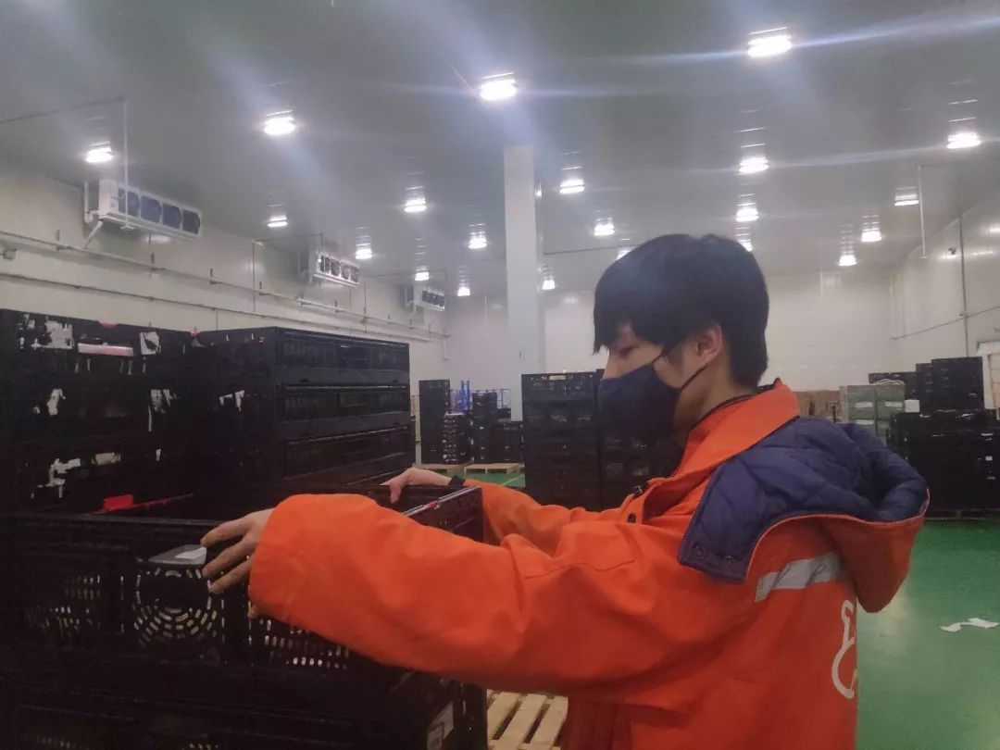
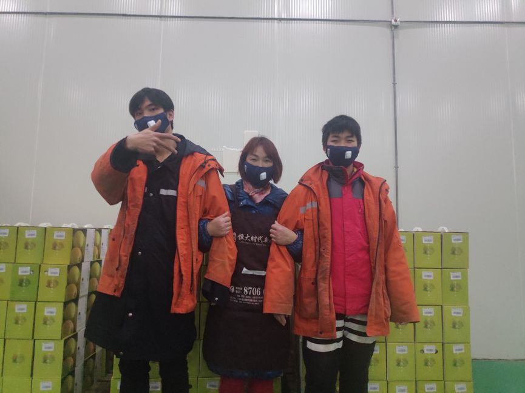

路上三日，洪湖两日——一个湖北人的返乡探亲日记
原文链接 备份链接 _ 编者按：这是海螺收到的第三篇投稿。作者一帆在对湖北省内病毒扩散毫不知情的情况下踏上返乡探亲之旅，因为当时媒体都还只是提到武汉，而她从广州回洪湖的自驾并不必经武汉，所以大家都以为没关系。即使到达洪湖之后，在当地也没有 …

疫情席卷武汉，大多数商超餐厅打烊，坚持营业的新零售超市承受着订单量暴增的压力。位于武汉郊区的一间加工中心正在高速运转，日均数十万份生鲜食物被运送到室温0℃的冷库。这个冬天，有一群人正在这里透支着体力，每天十几个小时分拣、包装，只为武汉居民能采购到新鲜的蔬果和肉蛋。
20岁的蔡志炫在冷库中坚持至今。他说，仓库很冷，但心很热。
 “今天一库、二库，总量50万件，大家加油！”
“今天一库、二库，总量50万件，大家加油！”
1月23日下午3点多，蔡志炫在钉钉工作群里收到了消息。这意味着，50万件生鲜食物，需要经过分类、包装处理后，在次日凌晨前配送到门店，供武汉市民选购。
这是日常工作量的3倍。作为盒马鲜生武汉加工中心的一名分拣员，蔡志炫已经高负荷工作了10多天，每天从下午5点忙到凌晨3点。到家后，他累得顾不上看手机，倒头就睡。直到钉钉提示音响起，睡眼惺忪的蔡志炫拿起手机，才被数字“50万”惊醒。
自从新型冠状病毒肺炎确定人传人，武汉市内许多餐厅、商超暂停营业，居民们做好了屯粮食、少出门的打算。这天凌晨2点，武汉市宣布了封城令，恐慌再次升级——交通停运后，买不到菜怎么办？
正在值班的盒马加工中心负责人夏佳祥预感到，天亮之后，看到封城消息的人们会涌入超市抢购，今天的量肯定不够。他和应急小组连忙沟通各地供应商的存货和通行，精确到了“哪一辆车几点从哪一个高速公路进来”。12个小时后，他们谋到了这50万件食物。
这些内情，20岁的男孩蔡志炫所知甚少。他家在武汉市汉南区的一个鱼池旁，远离城区、人烟稀少，与加工中心离得近，下班走路回家仅需十分钟。两点一线的节奏里，恐怖的疫情还没有切实侵入他的生活。只是听说有些朋友的小区里出现疑似病例，网上确诊数字在不断增加，他上下班路上都捂得严严实实，反倒更担心在武汉城区执勤的交警舅舅。
图 | 疫情来临前的大男孩蔡志炫
陡增的工作量这时让他紧张起来。不到5点，蔡志炫就赶到了加工中心。进门前，负责安检的同事为他量体温、消毒双手，还递给他一个新的口罩备用。
盒马武汉加工中心有两个冷链仓，一库负责蔬菜水果，二库负责肉禽蛋、烘焙品和乳制品。蔡志炫在常年低温的二库。为了保鲜，即使在冬天，冷库里的冷风机也要每隔4小时运行40分钟，才能保持室温在0到4℃。
蔡志炫在自己的衣服外面套上工作服，一件橙色棉袄。在这里工作了3个月，蔡志炫逐渐适应了这种冷。走进仓库的那一刹那，还是忍不住打了个哆嗦，口罩挡住了哈出来的热气。头顶的冷风机嗡嗡作响，在气流作用下，蔡志炫的头发竖了起来，顿时额头一凉，困意全无。
看到冷库里堆放的货物，蔡志炫才对今天的工作量有了实际的感受。左边区域的牛奶等乳制品，比往常高了一倍。旁边挨着封装好的各种肉类、鸡蛋，似乎是为了节省空间，摆放得格外紧凑。朝右边望去，两个备用区域临时投入使用，存放着豆腐、丸子等火锅食材。
蔡志炫一时分不清，这些是为各家各户的年夜饭准备的，还是疫情已经严重到需要大量囤货。他深吸一口气，在心里犯嘀咕：“这么多货，也不知道明早八九点能不能下班。”这时，经理夏佳祥拍了拍手，说道：“辛苦大家了，公司请大家吃汉堡、全鸡，马上就送到。”
气氛被调动了起来，大家开始在各自负责的区域分拣货物。双手碰到的地方是冰凉的，但不到半小时，蔡志炫已经汗流浃背。风吹得他有些心烦，冷风机歇下来，才舒服了点。

图 | 工作辛苦，冷库里也出汗
 通常在晚上9点前，供应商会送来全部货品。但这天夜晚，送货的车辆不断前来，封城13个小时后，最后一箱鸡肉在冷库门口被卸下，50万件货品才算全部送到。
通常在晚上9点前，供应商会送来全部货品。但这天夜晚，送货的车辆不断前来，封城13个小时后，最后一箱鸡肉在冷库门口被卸下，50万件货品才算全部送到。
夏佳祥早就预料到人手不够，包括蔡志炫在内，盒马加工中心的正式工不足原来的七成。开工前，夏佳祥加急联系熟悉的临时工，除去已经回老家的人，能来的都答应了，好几个员工还提出带家人来帮忙。最终，29个健康核实后的临时工加入了这场抗疫行动。
蔡志炫也喊来了妈妈和弟弟。在蔡志炫入职之前，妈妈经常周末过来做短工，是水果加工包装线的“老手”。而这个寒假，上高中的弟弟第一次来体验打工生活，跟着蔡志炫学干活。
在蔡志炫眼里，弟弟到底是个小孩子。弟弟第一天过来时，闻到仓库里面包的香味犯了馋，偷偷跟蔡志炫说：“哎，为什么只能看不能吃。”23日，是弟弟“体验”的第9天，蔡志炫隐隐担心他中途撑不下去。
晚上11点多，刚送过来的鸡肉等着被搬进冷库。幸好此时室内外温差不大，没有给搬运增加难度。若在武汉夏季，从冷库里出来时，浑身会像火燎一样疼。
蔡志炫喊弟弟一起，弟弟有些不情愿：“太脏了，不想搬。”由于货量太大，供货商来不及换盒马统一的胶筐，直接用了自家的旧箱子。“没关系，搬完洗手消毒嘛。”蔡志炫说完就开始动手，弟弟也闷声搬了起来。兄弟俩的衣服再次被汗水浸湿，一晚上反复好几次，秋衣紧紧黏在身上。
不传递负面情绪，是蔡志炫这3个多月学来的工作哲学。有时候，体力已经透支了，蔡志炫会第一时间掐灭“不想做”的想法，否则连精神也跟不上。蔡志炫觉得，他累的时候，同事一定也累了，于是时不时地喊一句：“搞完下班，搞完下班，再坚持一下。”

图 | 疫情期间工作量大
心理暗示的作用下，时间走得快了许多。到了24日凌晨3点半，蔡志炫和弟弟已经连续工作了10个小时。晚上吃的汉堡消化得差不多了，蔡志炫觉得有点饿，想起公司还给每人发了一个馒头。他主动用微波炉热好馒头，大家几口就吃完了。还剩下8万件货物，没有人顾得上说话。
重回岗位后，蔡志炫发现，很长一段时间都没有人吭声。吵闹的冷风机一停，整个冷库，安静得只剩下走路时鞋底的摩擦声、搬运时的喘气声、摞放黑色胶筐时的碰撞声。蔡志炫抬头一看，大家手上的动作比下午更快了。分拣员们已经顾不上冷，只想赶紧做完剩下的活儿。
凌晨6点，50万件食物全部分配完毕，整整齐齐地摆放在18个指定区域。为了准时营业，盒马门店增加了前来运货的人手。
9点59分，武汉封城近24小时，马路上偶尔有出租车出现。各大超市的门口，手里拿着布袋的人们在排队等着大门拉开。1分钟后，盒马发送了一条微博：“今早武汉18家盒马货架已上满。今天是大年三十，望新春安康，好好吃饭，武汉加油。”
一位住在武昌的女士头一天没能买到菜。她打开了盒马App，想碰碰运气，看见“门店供应充足，到店安心选购”的提示，才放心戴好口罩出门。到了家附近的盒马超市，恰好遇到店员正在补货，买到了一家人三天的菜量。她当然不会想到，这是蔡志炫和同事们在冷库里奋战了十几个小时的成果。

凌晨6点15分，累到瘫痪的蔡志炫终于下班了。天已经蒙蒙亮。一连好几天阴雨，武汉的清晨比冷库还冷。蔡志炫感觉刚从冷库出来，又走进了冰窖，想回家洗一个热水澡。
“再坚持一下，这几天正缺人。”他怕弟弟怕累。弟弟却没说什么，点头答应。
兄弟俩不再说话，隐约感觉到某种异样。路上空无一人，蔡志炫拿出手机刷了刷，所有的新闻标题，都是“肺炎”和“封城”。他想起来，小区出现疑似病例的朋友，已经在家隔离了。而好多住得远的同事，仍然冒着风险前来上班。
事态比想象得严重太多。蔡志炫这才明白，同事们一起忙碌13个小时的意义，或许是为了让武汉人在春节正常吃上饭。
然而，这个除夕，蔡志炫一家人没能吃上年夜饭。蔡志炫妈妈所在的水果包装线，下班要早一些。等儿子们到家后，她煮了两碗面条，就当提前吃了团圆饭。妈妈看着他们吃完后，才各自睡去。等睡醒了，母子三人又将重返加工中心，共同面对第二轮“50万”。

图 | 蔡志炫和妈妈、弟弟一起上阵
疫情期间，很多武汉盒马门店销售的水果，都经过了蔡志炫妈妈双手的包装。蔡妈妈的本职工作是加工汽车零部件，1月19日，汽车厂放假后，听说盒马最近缺人手，主动联系了夏佳祥。既能补贴家用，还能为疫区贡献一份力。
尽管水果的需求量不及蔬菜、肉禽蛋那么多，但蔡妈妈还是每天工作到凌晨两三点。她擅长做这些精细活儿，用保鲜膜包好水果，还要编竹筐、折礼盒。最近新来的临时工多，她便细心地教新人如何把塑料提手插进礼盒。
疲惫的时候，蔡志炫妈妈会担心隔壁冷库的儿子熬不下去。转念一想，吃点苦也好，况且，这个春节不光他们一家在这里坚持着。
水果包装线的组长邵尧钲也带着父亲、妻子在加工中心加班，家里只留下母亲和1岁的孩子。有人问，怎么不让家人回去陪孩子。邵尧钲回答：“说句不好听的话，就算我一人遭了，也会传染给全家，不如动员大家来帮忙，做些力所能及、有意义的事。”
蔡妈妈觉得这话在理，一家人能在一起，累点也值得。在她眼里，真正辛苦的，是那些家人在外地的正式工。“这些春节值班的人，原本初七就该轮休了，现在因为疫情，一直坚守在这里。”
有一次在休息室，她听见同事王松在和远在徐州的妻子视频。为了不让妻子担心，王松像汇报工作似的：“今天仓库消毒了3次。”“我按时换了口罩，你放心。”“晚饭吃了，公司还加了餐。”
“别哭啦，疫情过去了我就回家了。”

从大年初一开始，夏佳祥所在的加工中心每日供货总量有所下降。受封城影响，部分供应商已经在前两天送完了货，物资告急。同时，如果继续这样的工作时长，冷链仓的几十号员工恐怕熬不住。夏佳祥决定，暂停一些需求量小的食品供应（比如烘焙），保持民生必需品（蔬菜和肉蛋）充足供应。
武汉封城20多天，作为幕后的加工中心有条不紊地运转着。为了顾及到所有环节，夏佳祥最大的感受是“快”，大到与门店、供应商配合，小到与社区沟通员工正常出行，都需要及时响应。在这间位于华中的加工中心之外，盒马还“借用”其他餐饮企业的员工，快速培训上岗并为他们支付酬劳。
共克时艰的日子里，蔡志炫没有停下来休息。他也没想到，自己能坚持这么久。初中辍学后，蔡志炫断断续续打零工，一直稳定不下来。待得最久的公司，是武汉一家街舞工作室，常年要到全国各地办活动。直到去年11月，蔡志炫回家了，妈妈问他：“家对面的盒马，你要不要去试试？”
那就试试吧，蔡志炫在心底给自己设了一周的期限。
图 | 生活中的蔡志炫总是很乐观
这份工作虽然上手很快，但十分考验体力和耐力。刚开始，最难忍的是冷，走动一两个小时才稍微暖和一点。蔡志炫戴了一双棉手套，每抬一次装货箱就会磨损，分拣肉类又浸湿了，手套不到5天就破了。蔡志炫嫌手套碍事，干脆和其他人一样徒手干活。多洗几次手，似乎就没那么冷了。
熬夜上班对蔡志炫来说不是什么难事。他爱打游戏，以前常常在网吧通宵，睡一觉就精神了。打游戏时，他最喜欢大家为了目标全力拼杀的氛围。在二库这个小团队里，蔡志炫找到了这种氛围。“好像没有大家做不到的事情。”
蔡志炫打了一个比方，“如果一个陌生人走进我们冷库，就能感受到大家做事热火朝天的。而且大家不会各自冷着脸干活，休息时聊得很起劲，即使这个人不爱说话，也能很快融入我们。”尤其是一起经历了这次疫情，蔡志炫愈发觉得：冷库虽冷，但心很热。
大年初三，夏佳祥目睹了这个小团队的“热”。临近凌晨三点，大家都饿了，在休息室里翻箱倒柜，才找出了6桶方便面。
“女士优先！”有人提议。还剩3桶，“谁看上去最累谁吃。”夏佳祥知道，每个人都累，但从不展露在脸上，根本分不出“胜负”。最后，大家让来让去，才分完这些方便面。第二天，夏佳祥搬来了一些吃的，“感动归感动，还是别让大家再饿着了。”
在疲惫和热情的交织中，蔡志炫发觉，“一个星期，一个月，一下子过去了。”年轻的蔡志炫，似乎找到了适合自己的职业。更重要的是，身为武汉人，他想为这个城市做点事情。冷库里只有冬天，但武汉很快会等来春天。
撰文 | 成琨
- END -****
疫情紧急，举国齐动。真故会在“一起抗疫”专栏里，记录下不同人在这段特殊时期的努力。每一丝力量，都光芒万丈。


原文链接 备份链接 _ 编者按：这是海螺收到的第三篇投稿。作者一帆在对湖北省内病毒扩散毫不知情的情况下踏上返乡探亲之旅，因为当时媒体都还只是提到武汉，而她从广州回洪湖的自驾并不必经武汉，所以大家都以为没关系。即使到达洪湖之后，在当地也没有 …
原文链接 备份链接 在武汉经商、务工、求学的温州人大约有18万。春节前后，至少5万温州人从武汉等地返回温州。他们中很多人一到家乡就进行了14天的隔离观察。 有的是居家隔离，当地政府工作人员每天定时“查岗”，确认隔离者是否在家。 这些 …
原文链接 备份链接 我很清楚地感受到，自己成长的速度跟不上家庭在危机中前进的节奏，我开始重新审视自己在家庭中所扮演的角色。我觉得我应该成为连接父母和世界的一座桥梁。 文| 孟予 编辑| 小豆 版式| 陈星萌 22岁的李湘明一直在武汉生 …
原文链接 备份链接 对病毒的未知、医疗物资缺乏，又因高强度的工作压力影响到免疫力，导致医护感染达到高峰。随着医护人员防护意识、对病毒认识的增强，相关防护措施到位，后期被感染的医护人员应该越来越少 ****文 | 《财经》 …
原文链接 备份链接 岛语 非常时期，武汉成了全国人民挂念、祈福的城市。封城后，武汉人民的真实生活是什么样？ 正和岛自1月26日起特别推出《叶青：我在武汉疫区的第N天》专栏。叶青是一位定居武汉40年的市民，也是一名学者和官员。接下来的一段时 …